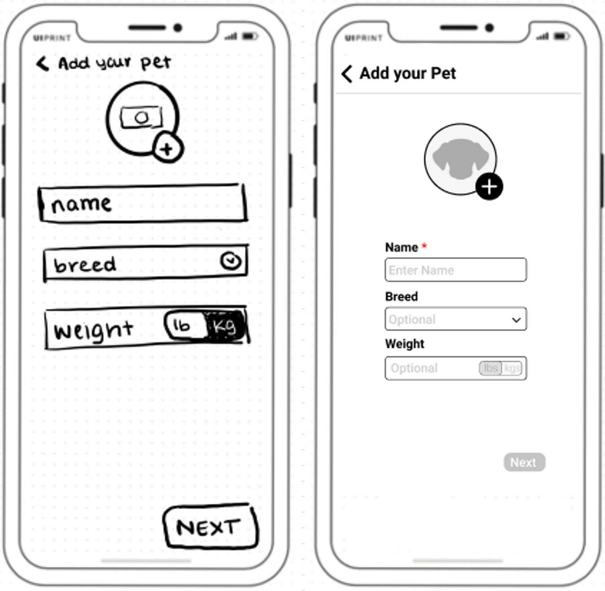
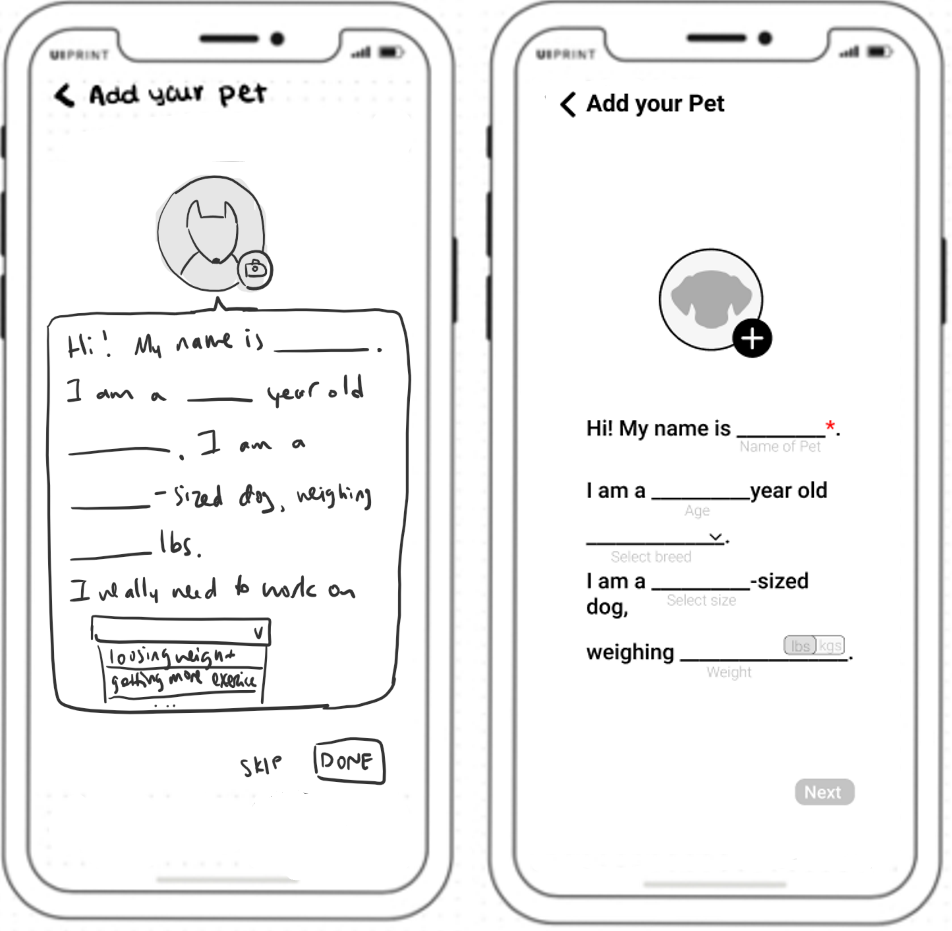

Design Project at UxResult 2020, a team of 5

Landing page of the BARK app
Challenge
"Design an onboarding process for a smart dog collar application The target audience for this product is someone in their 20's ~ 50's, who lives an urban lifestyle, and is familiar with technology. Some features included in the product are things like geofencing, activity monitoring, live tracking, etc.."
TOOLS:
- Figma
Design Process
1. Competitor Research
We began our design process by looking at several smart dog collar applications, namely Whistle, Fi, and Tractive.

Strengths
- • Strong showcase of features exhibiting their functionalities and ways to use them during the onboarding process
- • Nice appropriate visuals
Limitations
- • Lengthy onboarding process taking up to 5 min
- • Extensive permissions, some which we had to stop and think why the app may need such permissions, such as location tracking of the phone
2. Understanding the challenge
To better understand the challenge and get a better idea of some key things to focus on, the persona and customer journey were developed. For the personas, three general differnet types of uses were considered.

Three Personas as Users of BARK

Customer Journey of Sandra (Persona 3)
Key Takeaways
- • Make it short (or at least make it seem short)
- • Provide a showcase of features. Users who spent ~$100 on a smart dog collar would want to make use of all available features
- • Don't overwhelm the user with permissions - give a reason to why we need each permission
3. Userflows
From the key points developed in the previous step, a user flow was established.
Key Ideas
- • Move collar pairing to be the very first step. It doesn't make sense for the user to move on any further if the connection isn't made.
- • Combine the showcase of features with permissions so that the showcase of features can be used as a reasoning to asking for certain permissions. This is done as part of the preference block of the user flow
- • Make only the bare minimum mandatory to shorten the onboarding process. Then the user can later add personal preferences.

Userflow of Onboarding Process
4. Sketches + Low Fidelity Prototypes
Several design options were considered for this step of the design process. We will look at the pet profile page as an example.
Option 1:
Sketch and Lo-Fi Prototype of Option 1
- • Clean, simple and concise 1 page design
- • Allows user to skip the breed and weight fields and adding a photo of their pet
Option 2:
Sketch and Lo-Fi Prototype of Option 2
- • Provides a more friendly, playful tone
- • May seem a little text-heavy
- • Allows user to skip the age, breed, size, and weight fields and adding a photo of their pet
- • May seem ambiguous as to if the page is asking for the user's name or their pet's name
And likewise, a similar process was done for the other pages of the onboarding process.
5. High Fidelity Prototype
Finally, the high-fidelity prototype for the onboarding process of BARK was created.
Hi-fi Prototype of Pet Profile Page
Some key features include:
- • Accessibility Testing. The prototype passes the accessibility testing provided by accessibility-plugin provided by Figma.
- • Clear CTAs.
- • Progress bar. By indicating where the user is at in the onboarding process, it makes the whole process seem more brief and adds to the seamlessness of the pages.
Try our full onboarding process for the BARK app in Figma.